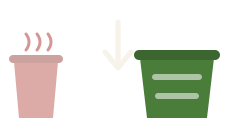

Why I'm doing this
Feeding the worms
Worms love coffee grounds. They're soft and full of nitrogen, which is exactly what worms eat and what their castings are rich in. That end product is vermicompost — a ready-made fertiliser, already as gentle as it is nutritious.

Cutting waste
In our old office at Kent St we had a dedicated organic bin, so grounds had a proper home. In the new office that bin doesn't exist, so they now end up in the normal red bin and just rot there.
This bin simply brings back what we had at Kent St.
Drop off your grounds
If you wouldn't mind, whenever the knock box fills up, empty it into my container. Every bit helps, and it really does add up.
- Knock box full? Empty it into the container whenever you get a chance.
- Container full too? Just let Chen know and he will come and empty it.
You're very welcome to take some raw coffee grounds home and compost them yourself.
Any questions at all, just come and chat with Chen.
Questions you might be asking
Can I just pour coffee grounds straight onto my plants?
No. Fresh grounds are acidic and can burn plant roots, especially on seedlings. They're like concentrated fertiliser — too much does harm. Compost them first, then use the finished compost on your plants.
What kind of worms are you using?
Red wigglers — the standard choice for a home worm farm. You can buy them from Bunnings, and some councils subsidise worm farms and composters. Definitely worth a look at your local council's website before you buy.
I have vermiphobia. How can I still start?
Skip the worms entirely — compost the grounds directly.
Collect the grounds, put them in a container with a lid, somewhere with no direct sunlight. Wait for mould to grow over them. Once they no longer smell like coffee, they're ready to use. In summer this takes about 1.5–2 months, in winter maybe 2–3 months.
Will the compost stink?
Not on their own. Coffee grounds act as a natural deodorizer and fit cleanly into balanced aerobic (oxygen-rich) decomposition.
Kitchen scraps are where problems start. They arrive wet and nitrogen-heavy, so a pile can tip from fine to foul in a couple of days. A bad smell is a warning, not a setback — and it almost always means too wet. Stop adding scraps, fold in more browns such as shredded paper or dry leaves, and let it breathe.
What other composting options are there?
Besides a worm farm or a standard compost bin, try Bokashi composting. It's much smaller than either — small enough for a kitchen counter or a balcony — and it processes faster. It's a genuinely good fit for coffee grounds, which are wet and nitrogen-heavy and react well to it.
Interested in how it works?
I've put together a photo gallery of both the coffee compost and the worm farm — what the grounds look like as they break down, and how the trays work.
Heads up if you're not keen on worms: the worm farm photos show them